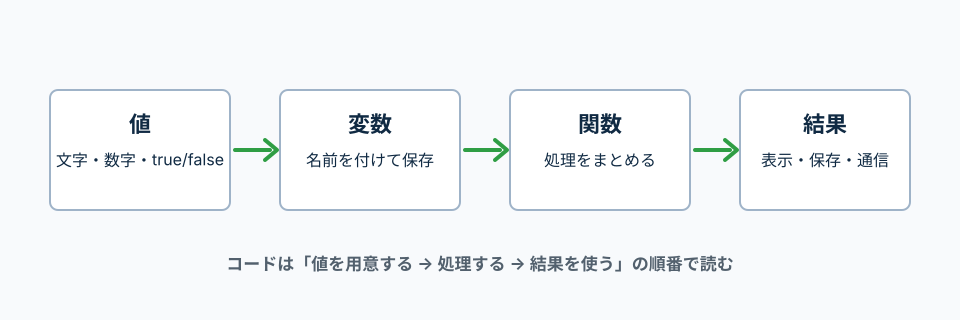

まずは、変数、条件分岐、関数、イベントで使う最小限の文法を覚える。
MDNのJavaScript Guideでは、文法、型、条件分岐、関数、オブジェクト、Promise、モジュールなどが章ごとに整理されている。
このページでは、LaravelやReact学習で最初に必要になる部分だけを抜き出す。
JavaScriptの基本は、値を用意して、変数に入れて、関数で処理して、結果を使う流れ。
まずはこの順番だけ意識すると、コードがかなり読みやすくなる。

'太郎'、20、false のような実際のデータ。
HTMLからJavaScriptファイルを読み込む。
deferを付けると、HTMLを読み取ったあとにJavaScriptを実行しやすくなる。
<script src="./script.js" defer></script>
src="./script.js"
読み込むJavaScriptファイルの場所。HTMLと同じ階層にあるscript.jsを読む。
defer
HTMLを先に読み込んでからJavaScriptを実行するための指定。
constは再代入しない値、letはあとで入れ直す値に使う。
迷ったらまずconst、あとで値を入れ直す必要がある時だけletにする。
const userName = '太郎';
const age = 20;
let count = 0;
count = count + 1;
console.log(userName);
console.log(age);
console.log(count);
const userName = '太郎';
userNameという名前で、'太郎'という文字を保存している。
let count = 0;
countはあとで値を入れ直すのでletにしている。
console.log(count);
今のcountの中身をブラウザの開発者ツールに表示する。
文字列、数値、真偽値、配列、オブジェクトをよく使う。
typeofを使うと、値の種類を確認できる。
const title = 'Todo';
const price = 1000;
const isDone = false;
const categories = ['仕事', '勉強'];
const todo = {
id: 1,
title: 'JavaScriptを勉強する',
isDone: false,
};
console.log(typeof title);
console.log(typeof price);
console.log(typeof isDone);
console.log(categories);
console.log(todo.title);
ifは、条件がtrueなら中の処理を実行する。
===は、値と型が同じかを比較する。
const status = 'done';
if (status === 'done') {
console.log('完了です');
} else {
console.log('未完了です');
}
関数は、処理に名前を付けて使い回すもの。
returnは、関数の結果を外に返す。
引数は、関数を呼ぶ側が渡す値。
function createMessage(name) {
return `${name}さん、こんにちは`;
}
const message = createMessage('太郎');
console.log(message);
function createMessage(name)
createMessageという名前の関数を作り、nameという引数を受け取る。ここではまだ中身は決まっていない。
return
関数の結果を外へ返す。ここでは完成したメッセージ文字列を返している。
createMessage('太郎')
関数を実行して、nameに'太郎'を渡している。ここで初めてnameの中身が決まる。
関数の丸括弧に書く名前は、あとから外から渡される値の仮の名前。
下の例では、priceとtaxRateはcalculateTotalを呼ぶ時に渡している。
function calculateTotal(price, taxRate) {
return price + price * taxRate;
}
const total = calculateTotal(1000, 0.1);
console.log(total);
price, taxRate
関数を作る時に付けた仮の名前。まだ具体的な値は入っていない。
calculateTotal(1000, 0.1)
呼ぶ側が1000と0.1を渡している。1000がprice、0.1がtaxRateに入る。
Reactや配列処理では、アロー関数をよく見る。
=> の左に受け取る値、右に処理を書く。
const createMessage = (name) => {
return `${name}さん、こんにちは`;
};
const message = createMessage('太郎');
console.log(message);
&&は、左がtrueの時だけ右を実行するという意味。
||は、左がfalseっぽい値なら右を使うという意味。
!は、trueとfalseを反転するという意味。
const isLogin = true;
const userName = '';
const isOpen = false;
isLogin && console.log('ログイン中です');
const displayName = userName || 'ゲスト';
console.log(displayName);
console.log(!isOpen);
&&
左側がtrueの時だけ右側を実行する。条件付き表示でもよく使う。
||
左側が空文字などfalseっぽい値なら、右側の値を使う。
!
trueとfalseを反転する。!isOpen は「開いていない」という意味になる。